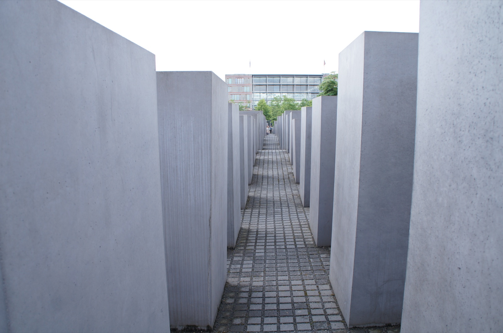
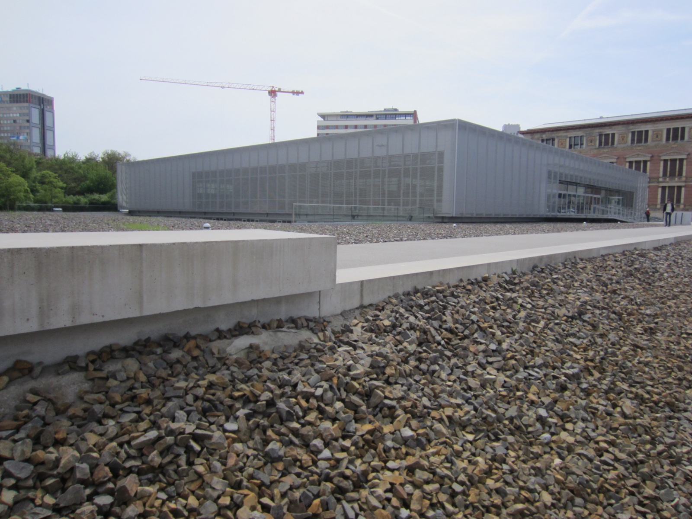
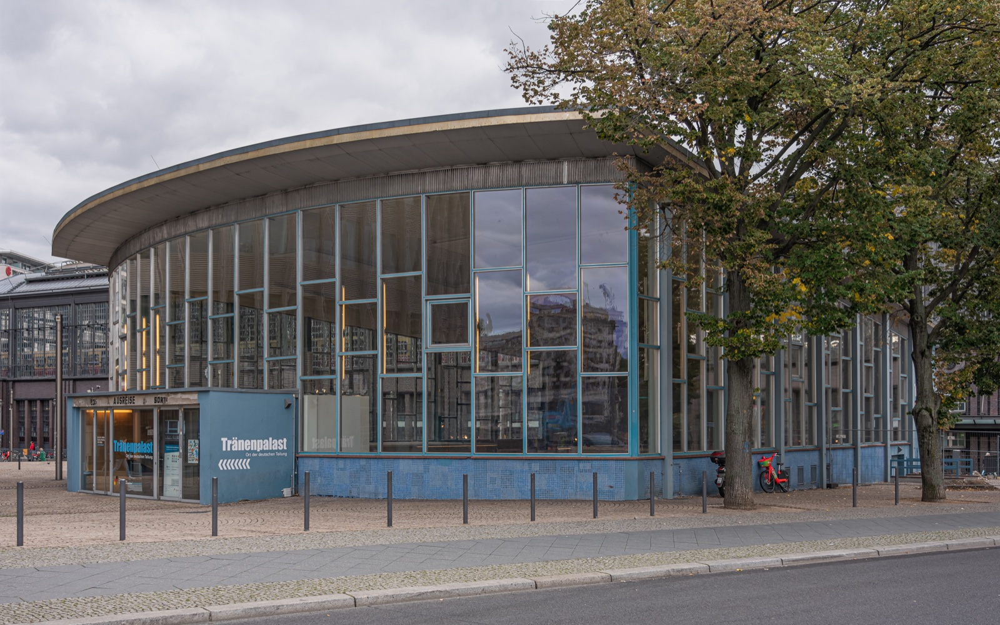

Berlin Memorial Reading Order
Four free places. One order that lets you read them.
Arrange four Berlin memorial sites by the question you want to carry from one place to the next. This is a reading sequence, not a navigation promise or a race between addresses.
- 4 real places
- 2–4 stops
- €0 entrance
Build a reading sequence, not a checklist
I would begin with the Memorial to the Murdered Jews of Europe, move to the evidence at Topography of Terror, then decide whether the Berlin Wall Memorial or Tränenpalast answers the question you still have. Drag a tile or use the arrow controls.
How many places can you actually read?
3-stop readingTry this order first: individual memory → organised persecution → divided-city evidence → a personal border crossing. Keep the order if it gives you a useful question; change it when your day needs a different beginning.
-

Memorial to the Murdered Jews of EuropeStart with memoryCora-Berliner-Straße 1 · field open 24 hours; Information Centre Tue–Sun 10:00–18:00 · free
-

Topography of TerrorRead the evidenceNiederkirchnerstraße 8 · daily 10:00–20:00 · free exhibitions
-
Berlin Wall MemorialSee the division
Bernauer Straße 111/119 · open-air grounds 08:00–22:00; centre Tue–Sun 10:00–18:00 · free
-

TränenpalastEnd with a decisionReichstagufer 17 · Tue–Fri 09:00–18:00; Sat–Sun 10:00–18:00; closed Monday · free
Your three-stop reading order
Start with a place that asks you to slow down, add the documentation that explains how power worked, then choose the physical site that answers your remaining question.
Important: The order is for attention and context, not turn-by-turn directions. Check every institution’s current page before you leave, especially around Mondays and public holidays.
Tool visual credits
Photos shown in this tool: Memorial field by Superchilum (CC BY-SA 4.0); Topography of Terror by Another Believer (CC BY-SA 4.0); Berlin Wall Memorial by Ansgar Koreng (CC BY-SA 4.0); Tränenpalast by A.Savin (Free Art License).